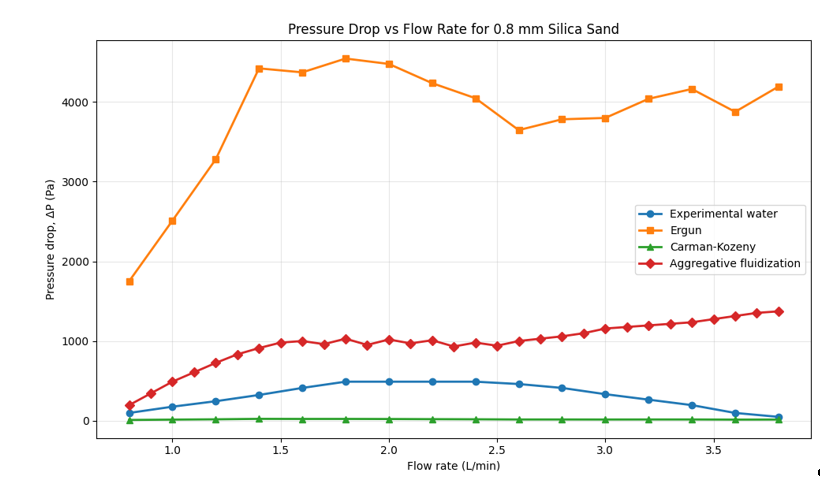

CHEMICAL ENGINEERING · EXPERIMENTAL DATA · PYTHON
Fluidization
Experimental Analysis.
Experimental investigation of a water–silica sand fluidized bed, using pressure-drop measurements, bed expansion and theoretical correlations to determine the minimum fluidisation velocity and fluidisation regime.
Experimental minimum fluidisation velocity
Pressure drop at minimum fluidisation
Experimental Froude number
Observed bed-height expansion
From fixed bed to fluidized bed.
This academic laboratory investigation examined the behaviour of a granular bed as water flow increased through silica sand particles.
The experiment focused on identifying the transition from fixed-bed operation to fluidization and determining the minimum fluidisation velocity from experimental pressure-drop behaviour.
Experimental results were then compared with theoretical predictions from the Ergun and Carman–Kozeny correlations.
Determine minimum fluidisation velocity
Identify the experimental velocity at which the silica sand bed transitions from fixed to fluidized behaviour.
Analyse pressure drop
Measure pressure drop across the bed over increasing water flow rates.
Compare theoretical models
Compare experimental pressure drops with predictions from the Ergun and Carman–Kozeny correlations.
Identify fluidisation behaviour
Use observations and the Froude number to distinguish particulate and aggregative fluidisation behaviour.
The experiment.
The investigation used 0.8 mm silica sand particles in a transparent fluidisation column. Water was circulated through the bed and the flow rate was increased incrementally.
Pressure difference was measured using piezometer/manometer tubes while bed height was recorded as the flow rate increased.
The water experiment was followed by an air–solid demonstration to observe the differences between particulate and aggregative fluidisation.
Turning measurements into engineering data.
The recorded flow rates and pressure differences were converted into engineering quantities that could be used to characterise the bed.
Calculations included superficial velocity, void fraction, Reynolds number, pressure drop and Froude number.
The experimental values were then compared with theoretical predictions using the Ergun and Carman–Kozeny equations.
Superficial velocity
Flow rate was converted to superficial velocity using the cross-sectional area of the column.
Void fraction
Bed height measurements were used to determine changes in the void fraction as the bed expanded.
Reynolds number
Reynolds numbers ranged from approximately 11.99 to 72.44 across the experimental flow range.
Pressure-drop correlations
Experimental pressure drops were compared against the Ergun and Carman–Kozeny correlations.
What the data showed.
The experimental pressure drop increased through the fixed-bed region before reaching a plateau around minimum fluidisation.

Experimental pressure drop compared with theoretical correlations across the investigated flow-rate range.
Experimental behaviour
Pressure drop increased from approximately 98.07 Pa at 0.8 L/min to 490.33 Pa at 1.8 L/min.
The pressure drop then remained approximately constant between 1.8 and 2.4 L/min before decreasing as the bed expanded further.
Bed expansion
Bed height increased from approximately 11.4 cm at the beginning of the experiment to 14.5 cm at the highest flow rates.
The corresponding void fraction increased from approximately 0.3715 to 0.5059, indicating expansion of the fluidized bed.
Experimental vs theoretical.
Predicted minimum fluidisation velocity.
The correlation overpredicted experimental pressure drop by approximately 3.5–9 times.
Predicted minimum fluidisation velocity.
The model substantially underpredicted the measured pressure drop and was outside its ideal laminar-flow range for the measured Reynolds numbers.
Minimum fluidisation velocity determined from the observed pressure-drop plateau.
This value provided the closest representation of the actual experimental system.
The model is only as good as its assumptions.
The theoretical correlations did not fully reproduce the experimental behaviour because the bed did not remain a stationary packed structure after fluidisation began.
As the flow rate increased, particles moved, the bed expanded and the void fraction changed. These changes altered the internal resistance to flow.
The Ergun correlation therefore provided useful information about fixed-bed behaviour but did not reproduce the pressure-drop plateau observed after fluidisation.
The experimental Reynolds numbers ranged from approximately 11.99 to 72.44, limiting the suitability of the simplified Carman–Kozeny treatment for the investigated conditions.
Particulate fluidisation
The low experimental Froude number, together with the smoother bed expansion observed in the water–silica sand system, supported classification as particulate fluidisation.
In contrast, the air–solid demonstration produced bubbling, pressure fluctuations and non-uniform expansion, consistent with aggregative or bubbling fluidisation.
What could be improved?
The experiment provided useful evidence of fluidisation behaviour, but several factors limited the accuracy of the analysis.
- Bed height was measured manually, introducing measurement uncertainty.
- Particle size distribution and sphericity could be characterised more thoroughly.
- Fluid temperature could be monitored more consistently because viscosity affects the calculations.
- Pressure fluctuations could be recorded quantitatively during fluidisation.
- Void fraction could be measured at more flow rates to better represent bed expansion.
Experimental analysis
Worked with measured engineering data and converted raw observations into process variables.
Computational analysis
Used Python-based calculations and visualisation to analyse experimental behaviour.
Model evaluation
Compared theoretical correlations against experimental behaviour and evaluated their limitations.
Engineering interpretation
Connected pressure-drop behaviour, bed expansion and fluidisation regime to physical changes within the system.
Ergun, S. (1952) 'Fluid flow through packed columns', Chemical Engineering Progress, 48(2), pp. 89–94.
Formisani, B. (1998) 'Fluidization of particulate systems of limited size', Chemical Engineering Science, 53(8), pp. 1367–1375.
Kunii, D. and Levenspiel, O. (2013) Fluidization Engineering. 2nd edn. Oxford: Butterworth-Heinemann.
McCabe, W.L., Smith, J.C. and Harriott, P. (1993) Unit Operations of Chemical Engineering. 5th edn. New York: McGraw-Hill.
Wilhelm, R.H. and Kwauk, M. (1948) 'Fluidization of solid particles', Chemical Reviews, 44(2), pp. 245–278.
Zhou, Y., Wang, J. and Zhu, J. (2023) 'Particulate and aggregative fluidization behaviour', Powder Technology.